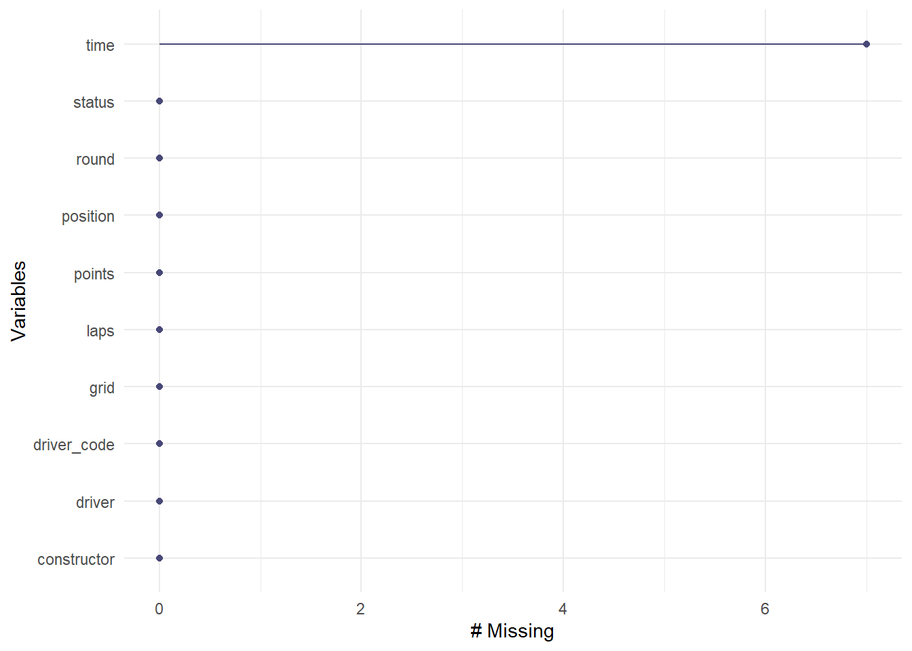
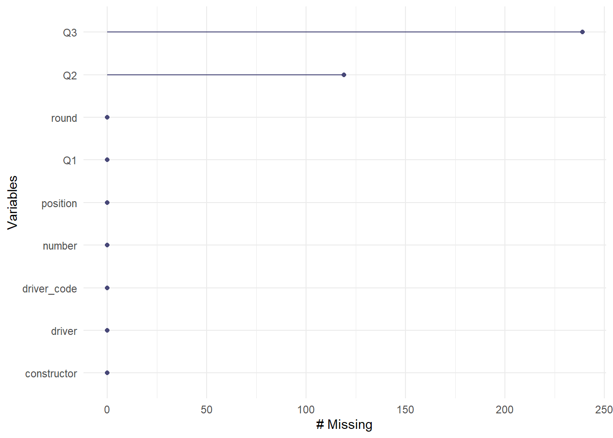
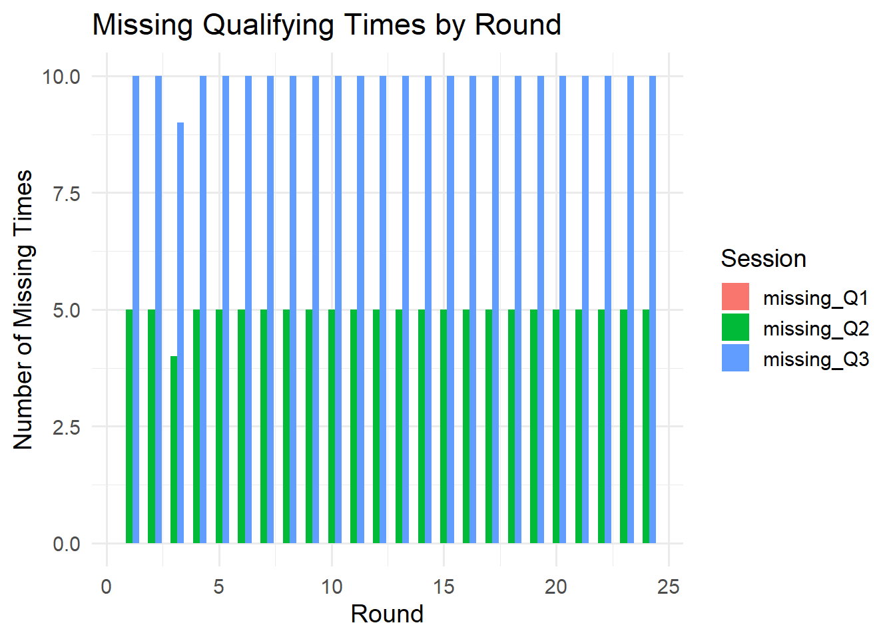

I intend to access the Jolpica-F1 API (https://api.jolpi.ca/ergast/) drawing from the Ergast API as my main data source for this project. This open-source API directly compiles Formula 1 results from 1950 through 2024 published by the FIA (Federation Internationale de l’Automobile. The data is store in a MySQL database maintained by and can be access through a REST API and outputted in JSON or XML format, so I can use the jsonlite package to convert the accessed information into dataframes for visualization and analysis. Specifically, each endpoint corresponds to tables that could be joined for analysis, like circuits, races, laps, qualifying results, drivers standings, drivers, pitstops, and sprint results. This dataset is updated after every race weekend within 24 hours of the official FIA race results’ publication. Overall, the number of races per season is variable with an upward trend in the last couple decades, from a low of 7 races in 1950. I will be focusing on the 2024 season for this project with 24 race entries and 6 sprint race entries, with each event including data for 20 drivers and 10 constructors, or teams, with different numbers of race-level observations. For instance, the laps table will have over a thousand rows as it captures each of the 20 drivers’ lap time for every lap of a race that could run from 50 to 70 laps. Each record has identifiers that allow for joins to create the final tables used in analysis. Finally, I’m accessing Ergast through Jolpica because Ergast was going to cease to be maintained at the end of 2024, so Jolpica is reaching Ergast’s endpoints. I may run into some issues on analyzing driver performance for the few drivers who were swapped mid-season. I want to guide my analysis by analyzing context that most ranking systems may not consider when evaluating skill, like wet-weather performance or racecraft on street circuits, which will require me to pull from wikipedia and other articles reporting on wet weather during the 2024 season and classifications of circuits. Specifically, it is a bit trickier to classify wet weather sessions apart from maually checking each Grand Prix’s wikipedia page for mentions of “wet” or “rain,” so this manual check could result in some error. The links to those sources are included below.
library(stringr)# Bar plot of missingness per variablegg_miss_var(race_df_subset)

Code
# Bar plot of missingness per variablegg_miss_var(qual_df_subset)

Code
qual_missing <- qual_df_subset |>mutate(missing_Q1 =is.na(Q1),missing_Q2 =is.na(Q2),missing_Q3 =is.na(Q3))missing_long <- qual_missing |>pivot_longer(cols =starts_with("missing_"),names_to ="session",values_to ="is_missing" ) |>group_by(round, session) |>summarize(n_missing =sum(is_missing), .groups ="drop")ggplot(missing_long, aes(x = round, y = n_missing, fill = session)) +geom_col(position ="dodge") +labs(title ="Missing Qualifying Times by Round",x ="Round",y ="Number of Missing Times",fill ="Session" ) +theme_minimal(base_size =14)

Across the merged 2024 race and qualifying datasets, missing values appear in fairly predictable ways rather than at random. In the race dataset, nearly all variables are fully complete except for race time, which is frequently missing when drivers do not finish (DNF), do not start (DNS), or are classified without a final lap time. This pattern is consistent with FIA reporting rules and doesn’t represent a data collection failure.
Missing values in the qualifying dataset follow the structure of Formula 1’s knockout qualifying format, so they also follow a fairly predictable pattern. Every driver sets a Q1 time, but only the top 15 progress to Q2, and the top 10 advance to Q3. Therefore, missing Q2 times occur for all drivers eliminated in Q1, and missing Q3 times occur for any driver who does not reach the final session. These structural NA patterns correctly reflect competition format rather than missing data problems.
The qualifying missingness visualization reveals a stable structural pattern. For Q1, there were no missing times because all drivers must participate. For Q2, there were always 5 missing times per round due to the drivers eliminated in Q1. For Q3, there were always 10 missing times per round due to the drivers eliminated in Q1 and Q2. This repeating structure confirms that the dataset accurately represents the qualifying cutoff system.
Overall, this data has no unexpected or concerning missingness appears in the datasets, and the patterns confirm high-quality and well-structured data suitable for further modeling. The main concern with data integrity for this investigation lies in collecting circuit-level information manually, like determining wet races and qualifying through wikipedia mentions of wetness and/or rain and identifying street circuits. However, there still is information for all of the circuits, albeit from a less uniform source.